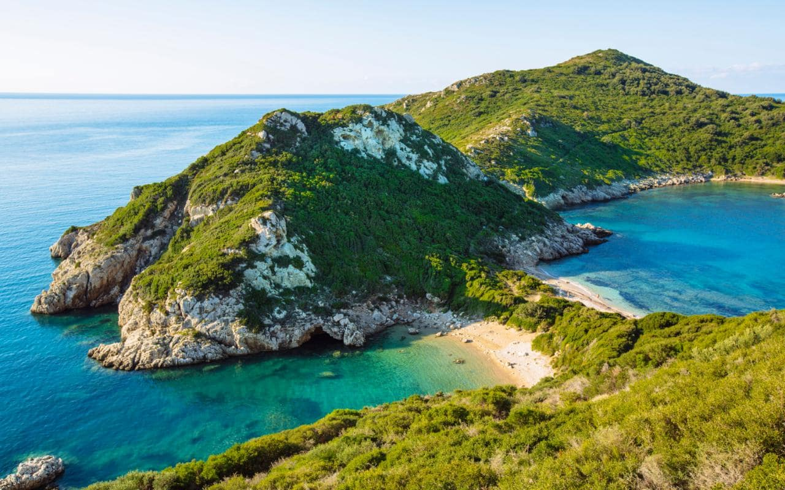
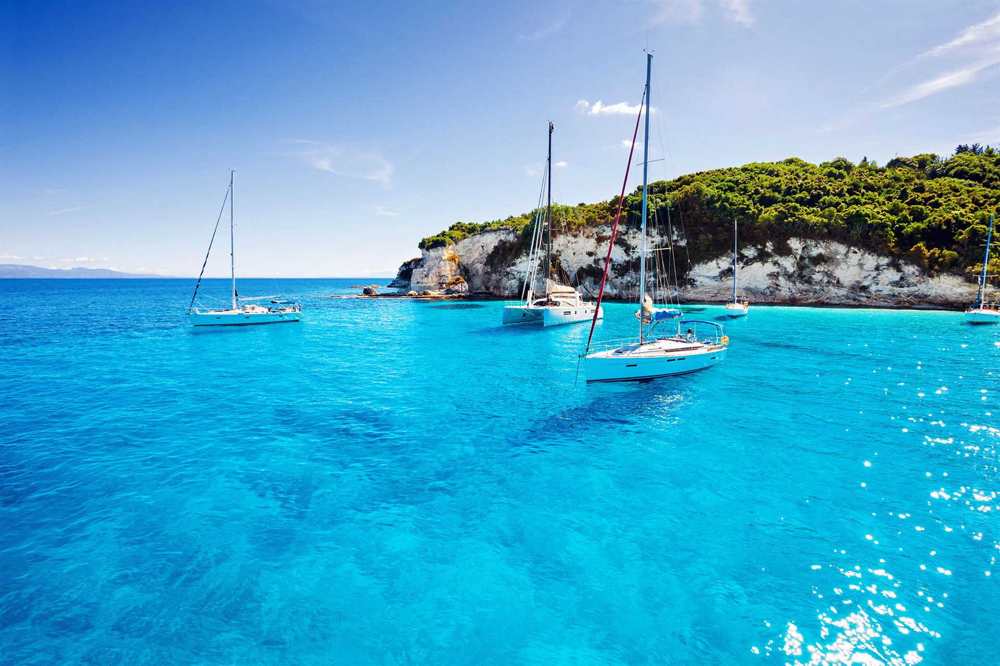
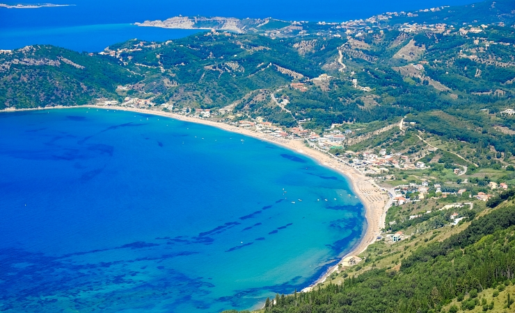
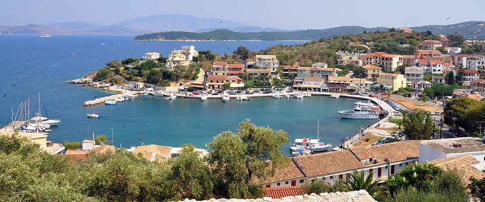

Krf, drugo po veličini, od sedam većih Jonskih ostrva, a ujedno i jedno od najlepših grčkih ostrva. Krf leži u Jonskom moru, koje je deo Sredozemnog mora, a sjeverno se spaja sa Jadranskim. Takvim položajem obezbjeđuje sebi mjesto najsjevernijeg značajnijeg ostrva Grčke. Ostrvo Krf sa okolnim ostrvcima i hridima čini zasebnu opštinu, koja je potpada pod okrug Krf. Prema grčkoj mitologiji, ostrvo je dobilo ime po kćerki rečnog boga Asopa, nimfi Kerkiri, koju je oteo Posejdon. U Homerovoj Odiseji čitamo da je Odisej ovde našao skolonište na kraju svojih lutanja, gde su ga ugostili kralj Alkinos i njegova kćerka Nafsika. Druga i verovatno tačnija pretpostavka o poreklu imena vezana je za prevod naziva na grčki, gde on znači „greben pun vrhova“. Krf se nalazi na krajnjem severozapadu Grčke u Jonskom moru. 2 km severnije od Krfa nalazi se albanska obala. Krf je mnogo bliži njenoj obali (oko 3 km) nego obali Epira (oko 15 km), njemu najbliže grčke periferije na jugoistoku. Južno od Krfa nalaze se druga Jonska ostrva, a najbliža su mu Paksi i Antipaksi (oko 15 km). Krf je ostrvo izduženog oblika. Ostrvo je izduženo u pravcu sever-jug oko 64 km, a širine do 20 km. Sever je najbrdovitiji (vrh Pankrator na 906 m n. v.), središnji deo manje, a jug je više valovit. Obala je razuđena i pravi brojne male zalive, poluostrva, zemljouze, i posebno značajno za privredu brojne male i čiste plaže. Klima na ostrvu je sredozemna. Leta su topla, ali ne toliko žarka kao na Egejskom moru. Zime su blage sa retkim temperaturama ispod 10 stepeni. Posebnost Krfa je veća vlažnost i više padavina (oko 1200 mm godišnje). Zbog toga je u poređenju sa ostalim dijelovima Grčke, Krf osoben po svojoj veoma bujnoj vegetaciji. Stoga su Grci ovo ostrvo i nazvali „Zeleno ostrvo“. Krf spada u bogatija ostrva Grčke. Zahvaljujući većoj vlažnosti poljoprivreda je razvijena i savremena, posebno na nižem i ravnijem jugu. Dominiraju masline i agrumi. Zanati su bili tradicionalno razvijeni, čemu je doprinela i bliska veza ostrva sa bogatijim Zapadom. Turizam se razvija još od kraja 19. veka, a danas je on visoko razvijen. Pord izvanrednih uslova za razvoj letnjeg turizma, tu je i očuvan stari grad Krf, u kome se lako mogu sagledati uticaju sa Zapada. Na Krfu postoji međunarodni aerodrom kao i univerzitet, na kojem se izučavaju istorija, muzika, jezik kao i bibliotekarstvo i Arhiviranje. Krf se ubraja među najimućnije regione u Grčkoj. Glavno mjesto ostrva je grad Krf.
 Istorija: Grčko ime Korkira ostrvo je dobilo prema predanju o nimfi Korkiri, koju je bog mora Posejdon donio na ovo ostrvo. Feakas, dijete iz ove veze, je bio praotac Feačana, jednog gostoprimljivog naroda, koji je prihvatio junaka Odiseja na njegovom putovanju za Itaku. Povećavanjem površine mora, Krf je prije oko 9000 godina odvojen od kopna. Lovci i sakupljači naselili su ovo ostrvo u neolitu. U bronzano doba, ostrvo je iznova naseljeno. Grčki naseljenici iz Eretrije u 8. vijeku p. n. e. osnovali su prvi grad na ostrvu i nazvali su ga prema njihovoj boginji Korkuri. Krajem 7. vijeka p. n. e. kolonisti iz Korinta preuzeli su vlast nad ostrvom. U jednoj velikoj pomorskoj bici, Kerkiri je pošlo za rukom da se oslobodi prevlasti Korintćana. Kerkira je potom postala morska sila. 480. p. n. e. Krf je predstavljao drugu po jačini flotu Grčke. Međutim 60 brodova koje su imali, nije aktivno učestvovalo u ratu protiv Persijanaca. Istoričar Tukidid smatra da je prvenstveno konflikt između Krfa i Korinta radi grada Epidamnosa, kao i pružen savez Atine Krfu, jedan od glavnih povoda za izbijanje Peloponeskog rata. U 4. vijeku p. n. e Krfljani su pokazali pretenzije i na teritoriju kopna. Pod svojom vlašću svojevremeno su držali Butrint, i važan polis Haones. U helenističko doba (od 300. p. n. e.) nezavisnosti Krfa zaprijetila je opasnost. Ostrvo su napadali pljačkaši iz Sirakuze. Podržali su ih makedonski kraljevi koje su sljedili ilirski pirati. Ostrvo su koristili za pljanjke rimskih trgovačkih brodova. U toku rata Rimljana protiv ilirske kraljice Teute, Krf je postao prva rimska provincija u Grčkoj. Kasnije Krf postaje dio rimske provincije Makedonije, a u doba cara Avgustina dodijeljeno je provinciji Epir. U 3. vijeku Krfljani su poprimili hrišćanstvo, posredstvom svetog Jasona i svetog Sosipatera. Od 395. godine Krf je podelom Rimskog carstva pripao Istočnom rimskom carstvu. Ostrvo su osvajali Saraceni, a u 11. veku osvojio ga je normanski vojvoda Robert Gviskar . Tokom 4. krstaškog rata, poslije 1204. godine, Krf dospeva pod vlast epirskih despota, 1267. godine ga osvaja kraljevina Napulj, a u 14. vijeku preuzima ga republika Venecija. Na ostrvu se uticaji zapadno-feudalne kulture i domaće grčko-pravoslavne tradicije spajaju u jednu samostalnu kulturu.
 